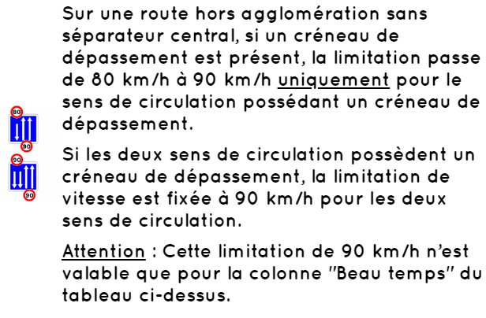
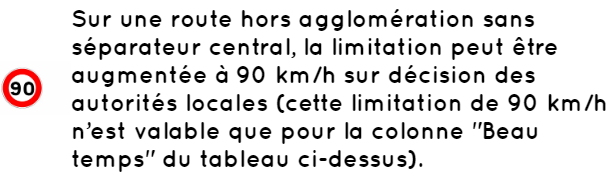
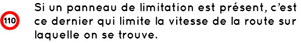
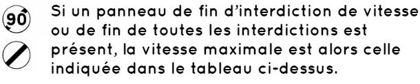
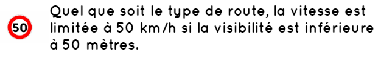
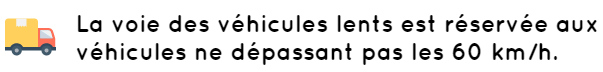
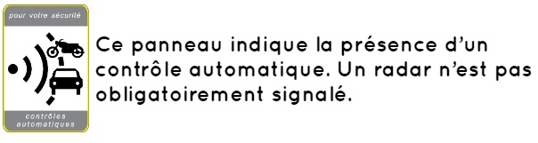
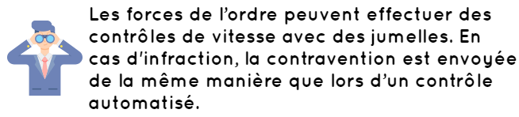

La vitesse maximale autorisée dépend :
● Quelques règles à connaitre
     ● Contrôles automatiques
Les contrôles automatiques sont effectués par des radars. En cas de dépassement de la vitesse maximale autorisée, le conducteur en infraction est identifié par la plaque d’immatriculation du véhicule. La contravention est alors envoyée par courrier postal à l’adresse stipulée sur la carte grise.
● Contrôles aux jumelles
La vitesse du véhicule joue un rôle important lors de la perte d’adhérence des pneumatiques avec le sol. En plus de la vitesse, plusieurs facteurs entrent en compte :
Bon courage pour votre code !